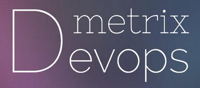

 Devops Matrix
An AngularJS and D3.js visualisation realized with Jean-Rémi Beaudoin and Adlen Afane during a hackathon organized by Société Générale about inventing tomorrow's IT department's tools.
It's a dashboard representing in one screen the DevOps state of a projects' wallet. It's meant to display project's agility metrics in a single view to help IT heads encourage good actions in the path of transforming project's to new standards and to stimulate development team to become always more agile than they're now.
Project's demo Github repository Introductive slides Blog article about the hackathon